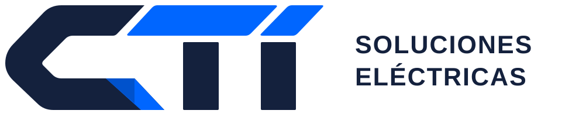

Diseño
Definimos la solución a partir de las cargas, las condiciones de operación y los requerimientos del proyecto.
- Levantamiento de requerimientos
- Dimensionamiento y selección de componentes
- Planos y documentación del diseño

CTI SOLUCIONES ELÉCTRICAS
Diseño, fabricación e instalación de tableros eléctricos para la realidad de cada proyecto.
Fotovoltaico · BESS · Agro · Industria

01 / QUÉ HACEMOS
El diseño, la fabricación y la instalación deben responder a una misma necesidad. En CTI abordamos estas etapas con un equipo técnico especializado.
Definimos la solución a partir de las cargas, las condiciones de operación y los requerimientos del proyecto.
Convertimos el diseño en un tablero, con una configuración ajustada al alcance técnico acordado.
Coordinamos la integración del tablero a la obra considerando sus condiciones y necesidades de conexión.
02 / DÓNDE APORTAMOS
Tableros eléctricos. El punto en común entre proyectos con necesidades muy distintas.
Distribución y protección eléctrica para proyectos solares, de acuerdo con su arquitectura de conexión.
Tableros para la integración eléctrica de sistemas de baterías, según las especificaciones del proyecto.
Distribución y control eléctrico para bombeo, riego y las necesidades operativas del campo.
Distribución, fuerza y control para equipos e instalaciones industriales.
03 / NUESTRO RESPALDO
CTI se apoya en la trayectoria constructiva de Construtoc, iniciada en 2006.
Esa experiencia aporta una mirada práctica sobre la ejecución de proyectos. El diseño eléctrico y las especialidades técnicas están a cargo de un equipo de profesionales e ingenieros especializados.
La experiencia constructiva como respaldo.
La especialización eléctrica como foco.
04 / CÓMO PARTIMOS
Sector, ubicación, tipo de tablero y fecha estimada.
Necesidades eléctricas, antecedentes disponibles y condiciones de instalación.
Solución técnica, entregables y condiciones comerciales para tu evaluación.
05 / HABLEMOS DE TU PROYECTO
¿Tienes planos o una idea inicial? Cuéntanos qué necesitas y preparemos el siguiente paso.
contacto@ctisoluciones.clSi tienes planos o especificaciones, puedes adjuntarlos al correo que se abrirá al completar el formulario.